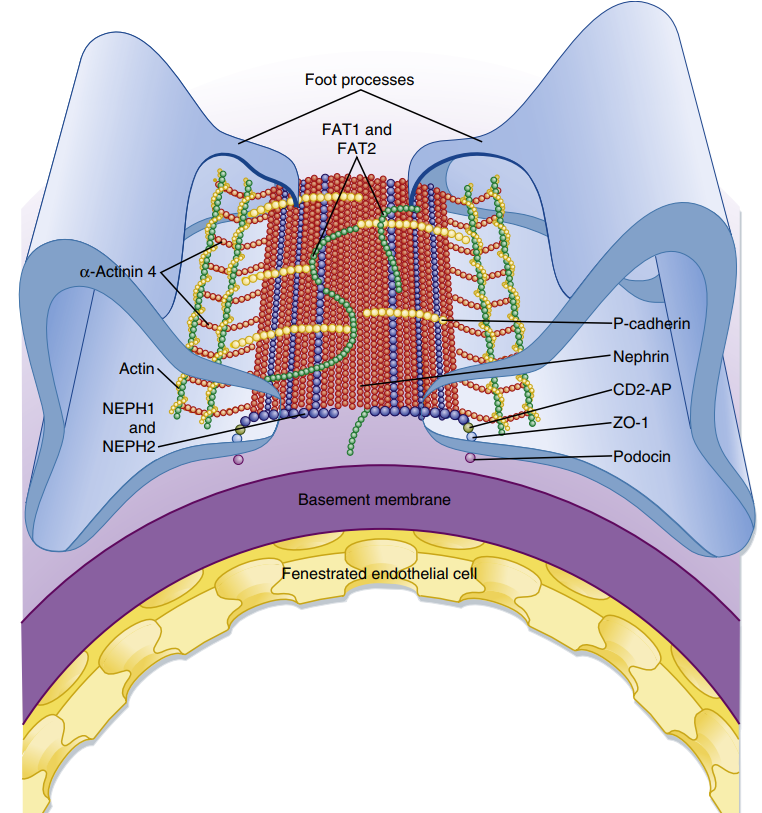
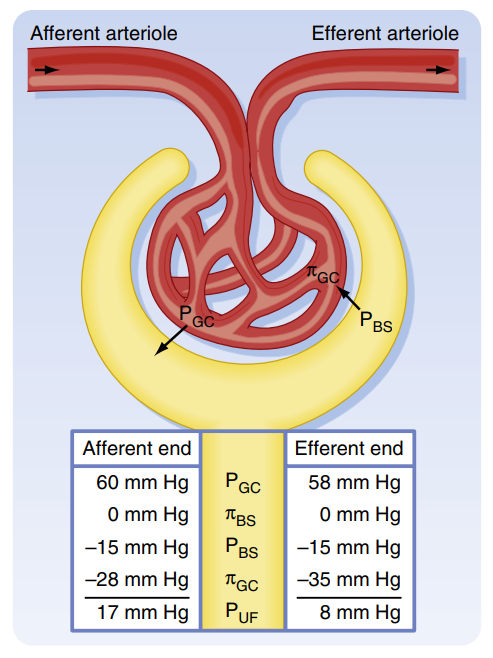
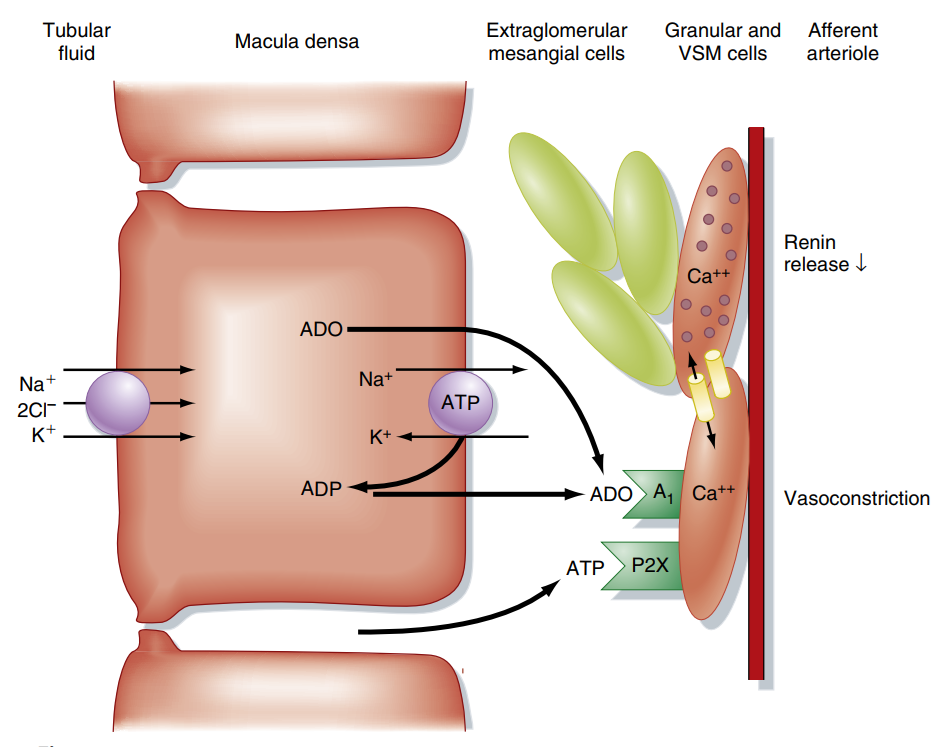

Chức năng Lọc tại Cầu thận (Glomerular Filtration)
Hệ thống hóa cơ chế siêu lọc huyết tương từ mao mạch cầu thận vào khoang Bowman, động lực học của các lực Starling và cơ chế tự điều hòa lưu lượng lọc cầu thận.
Quá trình hình thành nước tiểu bắt đầu tại cầu thận bằng cơ chế siêu lọc (ultrafiltration). Huyết tương khi đi qua các mao mạch cầu thận sẽ được lọc vào khoang Bowman để tạo thành dịch lọc cầu thận (nước tiểu nguyên thủy). Quá trình này diễn ra hoàn toàn thụ động nhờ vào sự chênh lệch áp suất giữa lòng mao mạch và khoang Bowman, được kiểm soát chặt chẽ bởi các cơ chế tự điều hòa tại thận nhằm đảm bảo sự ổn định của nội môi.
Phần I: Màng lọc Cầu thận và Tính thấm
Để huyết tương đi từ lòng mao mạch vào được khoang Bowman, dịch lọc phải vượt qua một hàng rào sinh học cực kỳ đặc hiệu gọi là Màng lọc cầu thận (Glomerular filtration barrier). Màng lọc này được cấu tạo từ ba lớp đồng tâm, hoạt động phối hợp như một bộ rây siêu vi.
Lớp tế bào nội mô của mao mạch cầu thận có hàng ngàn lỗ nhỏ gọi là "cửa sổ" (fenestrations) với đường kính từ 70 - 100 nm. Kích thước này ngăn cản các tế bào máu (hồng cầu, bạch cầu, tiểu cầu) đi qua nhưng cho phép nước và các protein nhỏ lọt qua. Bề mặt lớp nội mô được phủ bởi một lớp carbonhydrate tích điện âm gọi là glycocalyx giúp hạn chế protein.
Là một mạng lưới các sợi collagen type IV cấu trúc vô định hình đan xen với các glycoprotein sulfat hóa (như heparan sulfat proteoglycan). Màng đáy tích điện âm rất mạnh, đóng vai trò là rào cản chính yếu ngăn chặn các đại phân tử tích điện âm (đặc biệt là albumin huyết tương) đi qua màng lọc.
Là lớp biểu mô lá tạng của bao Bowman. Các podocyte tỏa ra các chân giả lớn rồi chia thành các chân giả nhỏ (foot processes) bám chặt vào màng đáy. Giữa các chân giả đan xen nhau là các khe lọc (filtration slits) rộng khoảng 40 nm. Khe này được nối lại bởi màng khe lọc chứa protein nephrin, hoạt động như một màng rây cơ học cuối cùng.
Tính chọn lọc của màng lọc cầu thận
Khả năng đi qua màng lọc của một chất phụ thuộc chặt chẽ vào hai đặc tính vật lý lý hóa:
- Kích thước phân tử (Bán kính hydrate hóa) Các phân tử có kích thước nhỏ dưới 10 kDa (như nước, điện giải Na+, K+, Cl-, glucose, urea) đi qua màng lọc tự do không bị cản trở. Các phân tử có kích thước lớn hơn 80 kDa (như globulin, các protein trọng lượng phân tử lớn) bị giữ lại hoàn toàn trong lòng mạch.
- Điện tích phân tử Do cả ba lớp của màng lọc đều phủ đầy các gốc tích điện âm (glycocalyx, heparan sulfat), các phân tử mang điện tích âm (như protein albumin, dù bán kính phân tử chỉ khoảng 3.6 nm - nhỏ hơn khe lọc) sẽ bị lực đẩy tĩnh điện ngăn cản mạnh mẽ, hầu như không lọt được vào nước tiểu nguyên thủy. Ngược lại, các ion dương hoặc phân tử trung tính đi qua dễ dàng hơn.

Phần II: Động lực học Siêu lọc (Các lực Starling)
Tốc độ lọc cầu thận (Glomerular Filtration Rate - \(GFR\)) bình thường ở người trưởng thành khoảng 125 mL/phút (tương đương 180 lít dịch lọc mỗi ngày). Quá trình siêu lọc này được vận hành bởi sự chênh lệch áp suất thủy tĩnh và áp suất keo ở hai bên màng lọc cầu thận, tuân theo định luật Starling về trao đổi dịch qua màng mao mạch.
Công thức tính Áp suất lọc thực tế (\(P_{UF}\) hoặc \(UP\))
Áp suất siêu lọc thực tế là hiệu số giữa lực đẩy dịch ra khỏi mao mạch và các lực cản giữ dịch lại:
(Chú ý: Áp suất keo của dịch lọc trong khoang Bowman \(\Pi_{BS}\) được coi bằng 0 vì dịch lọc bình thường không chứa protein).
Các thành phần áp suất Starling tại cầu thận
- Áp suất thủy tĩnh mao mạch (\(P_{GC}\)) Khoảng 55 mmHg. Đây là lực ĐẨY dịch ra khỏi lòng mạch vào khoang Bowman. Trị số này cao hơn nhiều so với áp suất thủy tĩnh ở các mao mạch cơ quan khác (khoảng 15-30 mmHg) vì tiểu động mạch vào rất ngắn, thẳng và tiểu động mạch ra có sức cản rất lớn.
- Áp suất thủy tĩnh khoang Bowman (\(P_{BS}\)) Khoảng 15 mmHg. Đây là lực CẢN lọc, đẩy dịch ngược từ khoang Bowman vào lại mao mạch. Lực này được tạo ra do dịch lọc phải di chuyển liên tục qua một hệ thống ống thận hẹp.
- Áp suất keo huyết tương mao mạch (\(\Pi_{GC}\) hoặc COP) Khoảng 30 mmHg (ở đầu tiểu động mạch vào) và tăng dần lên khoảng 35 mmHg (ở đầu tiểu động mạch ra). Đây là lực CẢN lọc, giữ nước lại trong lòng mạch dưới sức hút thẩm thấu của các protein không lọc được. Trị số này tăng dần dọc theo mao mạch do nước bị lọc ra ngoài làm protein huyết tương bị cô đặc lại.
Thế trị số trung bình vào công thức: $$UP = 55\text{ mmHg} - 15\text{ mmHg} - 30\text{ mmHg} = +10\text{ mmHg}$$ Áp suất siêu lọc thực tế dương (\(+10\text{ mmHg}\)) đảm bảo dịch lọc liên tục được đẩy ra để tạo thành nước tiểu nguyên thủy.
Công thức tính GFR
Tốc độ lọc cầu thận tỷ lệ thuận với áp suất lọc thực tế và hệ số siêu lọc màng:
Trong đó, \(K_f\) (hệ số siêu lọc) phụ thuộc vào diện tích bề mặt lọc và tính thấm của màng lọc cầu thận; \(UP\) là áp suất lọc thực tế.
Trị số \(K_f\) ở cầu thận cực kỳ lớn (khoảng 12.5 mL/phút/mmHg), gấp 400 lần so với các mao mạch khác trong cơ thể.

Phần III: Tự điều hòa Độ lọc Cầu thận (Autoregulation)
Để bảo vệ nhu mô thận khỏi tổn thương do áp lực và duy trì tốc độ bài tiết chất thải ổn định, thận có khả năng duy trì lưu lượng máu thận (RBF) và tốc độ lọc cầu thận (\(GFR\)) tương đối hằng định khi huyết áp động mạch hệ thống dao động trong khoảng rộng từ 80 - 180 mmHg. Quá trình này được thực hiện thông qua hai cơ chế điều hòa nội tại tại chỗ:
1. Cơ chế tự co cơ trơn (Myogenic Mechanism)
Đây là phản ứng cơ học trực tiếp của tế bào cơ trơn trên thành mạch máu:
Thành tiểu động mạch vào bị căng ra \(\rightarrow\) Mở các kênh ion \(Ca^{2+}\) nhạy cảm lực căng trên màng tế bào cơ trơn \(\rightarrow\) \(Ca^{2+}\) đi vào nội bào gây co tiểu động mạch vào \(\rightarrow\) Tăng sức cản mạch máu, giảm lượng máu đi vào cầu thận \(\rightarrow\) Giữ \(GFR\) ổn định.
Giảm sức căng thành mạch \(\rightarrow\) Đóng các kênh \(Ca^{2+}\) \(\rightarrow\) Giãn cơ trơn tiểu động mạch vào \(\rightarrow\) Tăng lượng máu đi vào cầu thận \(\rightarrow\) Duy trì \(GFR\) không bị sụt giảm.
2. Cơ chế điều hòa ngược Ống - Cầu (Tubuloglomerular Feedback - TGF)
Cơ chế này sử dụng cấu trúc chuyên biệt gọi là Phức hợp cận cầu thận (Juxtaglomerular Apparatus - JGA) làm cảm biến hóa học và áp lực học. JGA nằm ở điểm tiếp xúc giữa đoạn đầu ống lượn xa và tiểu động mạch của chính cầu thận đó.
-
Bước 1: Huyết áp động mạch hệ thống tăng
Áp suất lọc thực tế tăng làm tốc độ lọc cầu thận (\(GFR\)) tăng lên đột ngột.
-
Bước 2: Tốc độ dòng dịch trong ống thận tăng nhanh
Dịch lọc chảy quá nhanh qua ống lượn gần làm giảm thời gian tái hấp thu muối nước tại đây, dẫn đến nồng độ Na+ và Cl- trong dịch lọc tăng cao khi đi đến đoạn ống lượn xa.
-
Bước 3: Tế bào Vết đặc (Macula densa) cảm nhận NaCl
Tế bào vết đặc ở thành ống lượn xa hấp thu Na+, Cl- thông qua kênh đồng vận chuyển NKCC2. Lượng NaCl đi vào tế bào nhiều làm tăng hoạt động bơm Na+-K+-ATPase, tiêu tốn nhiều ATP nội bào.
-
Bước 4: Giải phóng ATP và Adenosine
ATP bị phân hủy và giải phóng ra khoảng kẽ dưới dạng ATP và Adenosine. Hai chất này hoạt động như các chất truyền tin co mạch tại chỗ.
-
Bước 5: Co tiểu động mạch vào
Adenosine gắn vào thụ thể A1 trên tế bào cơ trơn của tiểu động mạch vào gây co mạch, làm giảm lưu lượng máu vào mao mạch cầu thận. Kết quả là làm giảm áp suất thủy tĩnh (\(P_{GC}\)) và đưa \(GFR\) trở lại mức bình thường.

Phần IV: Mối liên hệ Lâm sàng & Ứng dụng Y khoa
Rối loạn chức năng siêu lọc cầu thận và các cơ chế điều hòa huyết động tại thận là nguồn gốc bệnh sinh của nhiều hội chứng lâm sàng quan trọng:
🩺 1. Tổn thương màng lọc & Hội chứng Thận hư (Nephrotic Syndrome)
Khi có sự tổn thương cấu trúc màng lọc cầu thận (ví dụ: do phản ứng miễn dịch trong viêm cầu thận cấp/mạn, lắng đọng phức hợp miễn dịch, hoặc tổn thương tế bào podocytes do đái tháo đường), tính chọn lọc của màng lọc bị phá hủy hoàn toàn.
Sự mất đi các gốc tích điện âm của màng đáy và tổn thương các protein khe lọc (như nephrin) làm cho màng lọc cầu thận "rò rỉ" lượng lớn protein (chủ yếu là Albumin). Khi protein thoát ra nước tiểu vượt quá 3.5 g/24 giờ, bệnh nhân sẽ rơi vào bệnh cảnh Hội chứng Thận hư, đặc trưng bởi: albumin máu giảm nặng, giảm áp suất keo huyết tương (\(\Pi_{GC}\) toàn thân) dẫn đến dịch thoát ra khoảng kẽ gây phù toàn thân (phù mềm, trắng, ấn lõm), tràn dịch đa màng.
🩺 2. Suy thận cấp trước thận (Prerenal Acute Kidney Injury)
Trong các tình trạng giảm thể tích tuần hoàn nặng (mất máu do chấn thương, mất nước do tiêu chảy cấp, hoặc suy tim sung huyết), huyết áp động mạch hệ thống tụt dốc dưới mức giới hạn tự điều hòa (\(< 80\text{ mmHg}\)).
Khi đó, áp suất thủy tĩnh mao mạch cầu thận (\(P_{GC}\)) sụt giảm mạnh (xuống dưới 45 mmHg). Lúc này, hiệu số lọc thực tế: $$UP = P_{GC} - P_{BS} - \Pi_{GC} \approx 40 - 15 - 28 = -3\text{ mmHg}$$ Áp suất lọc thực tế bị triệt tiêu hoàn toàn (trở về 0 hoặc âm), khiến quá trình siêu lọc ngừng lại. Bệnh nhân lâm sàng xuất hiện tình trạng thiểu niệu (thể tích nước tiểu < 400 mL/ngày) hoặc vô niệu (< 100 mL/ngày), ure và creatinine máu tăng vọt, gây ra bệnh cảnh Suy thận cấp trước thận.
🩺 Ứng dụng Lâm sàng Cao (High-Yield Clinical Correlation)
-
Tác dụng bảo vệ thận của Thuốc ức chế SGLT2 (SGLT2 inhibitors):
Ở bệnh nhân đái tháo đường, nồng độ glucose trong dịch lọc rất cao dẫn đến tăng
hoạt động của kênh đồng vận chuyển natri-glucose (SGLT2) ở ống lượn gần. Sự tăng
hấp thu natri kèm glucose ở ống lượn gần làm giảm lượng NaCl đi đến ống lượn
xa. Tế bào vết đặc cảm nhận natri thấp \(\rightarrow\) giả định rằng dòng dịch
lọc đang chảy quá chậm \(\rightarrow\) giảm tiết Adenosine \(\rightarrow\) gây
giãn mạnh tiểu động mạch vào. Đồng thời, hệ RAAS cục bộ được kích hoạt gây
co tiểu động mạch ra. Kết quả là làm tăng vọt áp suất thủy tĩnh mao mạch
(\(P_{GC}\)), đẩy GFR tăng cao quá mức (tăng lọc cầu thận - hyperfiltration). Sự
tăng lọc kéo dài này gây xơ hóa cầu thận và suy thận mạn tiến triển.
Cơ chế điều trị của SGLT2i: Khi dùng thuốc ức chế SGLT2, natri và glucose không bị tái hấp thu ở ống lượn gần và đi xuống nhiều hơn đến ống lượn xa. Tế bào vết đặc phát hiện nồng độ NaCl cao \(\rightarrow\) kích hoạt lại cơ chế TGF \(\rightarrow\) giải phóng Adenosine gây co nhẹ tiểu động mạch vào \(\rightarrow\) làm giảm áp suất thủy tĩnh mao mạch cầu thận về mức bình thường. Nhờ đó làm giảm áp lực lọc cơ học tác động lên màng lọc cầu thận, bảo vệ cầu thận khỏi tổn thương dài hạn trên lâm sàng. -
Ảnh hưởng của NSAID và Ức chế men chuyển (ACEi) lên huyết động cầu
thận:
Máu chảy vào và ra khỏi cầu thận được kiểm soát bởi hai tiểu động mạch: tiểu
động mạch vào (được giãn chủ yếu bởi Prostaglandin tại chỗ) và tiểu động mạch ra
(được co chủ yếu bởi Angiotensin II).
- NSAID (Thuốc kháng viêm không steroid): Ức chế tổng hợp Prostaglandin \(\rightarrow\) gây co tiểu động mạch vào, làm giảm dòng máu đến cầu thận, giảm áp suất lọc.
- Thuốc ức chế men chuyển (ACEi) / Thụ thể (ARB): Ngăn chặn tác dụng của Angiotensin II \(\rightarrow\) gây giãn tiểu động mạch ra.
Tài liệu tham khảo (AMA Citation style)
- Mai PT, Đặng HAT, Lê QT, Vũ TTQ, Bùi DK. Sinh lý học y khoa. Nhà xuất bản Đại học Quốc gia Thành phố Hồ Chí Minh; 2024.
- Koeppen BM, Stanton BA. Berne and Levy Physiology. 8th ed. Elsevier; 2024.
- Barrett KE, Barman SM, Boitano S, Brooks HL. Ganong's Review of Medical Physiology. 24th ed. McGraw-Hill Medical; 2012.